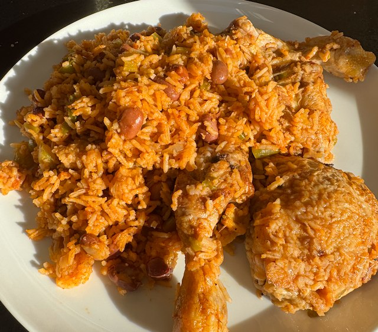

Cajun Chicken and Rice

From imgur (no longer available in this region).
Ingredients
- 1 onion, chopped fine
- 1 stalk celery, diced
- 1 green pepper, diced
- 3 tbsp tomato puree
- 4 chicken thighs
- 2 tbsp cajun seasoning
- olive oil
- 250ml rice
- 1 tin borlotti bean, drained and rinsed
- 375ml chicken stock, from a stock pot
- ½ tsp table salt
Method
Veg. On low heat fry onions till translucent, then add celery and fry till softened, then add pepper and fry some more. Add the tomato puree, and a bit of cajun seasoning and fry for a couple of min.
Chicken. Heat frying pan to hot. Add oil and chicken skin side down. Turn heat to medium. Add salt and cajun seasoning to chicken. When the skin is brown, flip the chicken and cook some more. Reserve the chicken, deglaze the pan with water and add to the stock.
Assemble. Add rice to the veg and fry a bit. Then add beans, stock and salt. Add chicken on top skin side up. Increase the heat an bring to the boil, cover.
Oven. Cook in oven on 160°C for 25 min. Then remove and let rest with lid on for 10 min to complete cooking.